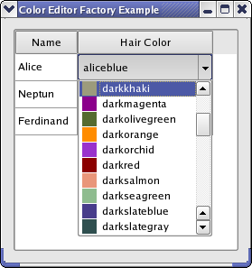

Color Editor Factory Example
This example shows how to create an editor that can be used by a QStyledItemDelegate.

When editing data in a QListView, QTableView, or QTreeView, editors are created and displayed by a delegate. QStyledItemDelegate, which is the default delegate used by Qt's item views, uses a QItemEditorFactory to create editors for it. A unique instance provided by QItemEditorFactory is by default installed on all item delegates.
An item editor factory contains a collection of QItemEditorCreatorBase instances, which are specialized factories that produce editors for one particular QVariant data type (all models in Qt store their data in QVariants). An editor can be any Qt or custom widget.
In this example, we will create an editor (implemented in the ColorListEditor class) that can edit the QColor data type and be used by QStyledItemDelegates. We do this by creating a new QItemEditorCreatorBase that produces ColorListEditors and register it with a new factory, which we set as the default editor item factory (the unique factory instance). To test our editor, we have implemented the Window class, which displays a QTableWidget in which QColors can be edited.
Window Class Implementation
In the Window class, we create the item editor creator base for our color editor and add it to the default factory. We also create a QTableWidget in which our editor can be tested. It is filled with some data and displayed in a window.
We take a closer look at the constructor:
Window::Window() { QItemEditorFactory *factory = new QItemEditorFactory; QItemEditorCreatorBase *colorListCreator = new QStandardItemEditorCreator<ColorListEditor>(); factory->registerEditor(QMetaType::QColor, colorListCreator); QItemEditorFactory::setDefaultFactory(factory); createGUI(); }
The QStandardItemEditorCreator is a convenience class that inherits QItemEditorCreatorBase. Its constructor takes a template class, of which instances are returned from createWidget(). The creator uses a constructor that takes a QWidget as its only parameter; the template class must provide this. This way, there is no need to subclass QStandardItemEditorCreator.
After the new factory has been set, all standard item delegates will use it (i.e, also delegates that were created before the new default factory was set).
The createGUI() function sets up the table and fills it with data.
ColorListEditor Definition
The ColorListEditor inherits QComboBox and lets the user select a QColor from its popup list.
class ColorListEditor : public QComboBox { Q_OBJECT Q_PROPERTY(QColor color READ color WRITE setColor USER true) public: ColorListEditor(QWidget *widget = nullptr); public: QColor color() const; void setColor(const QColor &color); private: void populateList(); };
QStyledItemDelegate manages the interaction between the editor and the model, i.e., it retrieves data to edit from the model and store data from the editor in the model. The data that is edited by an editor is stored in the editor's user data property, and the delegate uses Qt's property system to access it by name. We declare our user data property with the Q_PROPERTY macro. The property is set to be the user type with the USER keyword.
ColorListEditor Implementation
The constructor of ColorListEditor simply calls populateList(), which we will look at later. We move on to the color() function:
QColor ColorListEditor::color() const { return qvariant_cast<QColor>(itemData(currentIndex(), Qt::DecorationRole)); }
We return the data that is selected in the combobox. The data is stored in the Qt::DecorationRole as the color is then also displayed in the popup list (as shown in the image above).
void ColorListEditor::setColor(const QColor &color) { setCurrentIndex(findData(color, Qt::DecorationRole)); }
The findData() function searches the items in the combobox and returns the index of the item that has color in the Qt::Decoration role.
void ColorListEditor::populateList() { const QStringList colorNames = QColor::colorNames(); for (int i = 0; i < colorNames.size(); ++i) { QColor color(colorNames[i]); insertItem(i, colorNames[i]); setItemData(i, color, Qt::DecorationRole); } }
Qt knows some predefined colors by name. We simply loop through these to fill our editor with items.
Further Customization of Item View Editors
You can customize Qt's model view framework in many ways. The procedure shown in this example is usually sufficient to provide custom editors. Further customization is achieved by subclassing QItemEditorFactory and QItemEditorCreatorBase. It is also possible to subclass QStyledItemDelegate if you don't wish to use a factory at all.
Possible suggestions are:
- If the editor widget has no user property defined, the delegate asks the factory for the property name, which it in turn asks the item editor creator for. In this case, you can use the QItemEditorCreator class, which takes the property name to use for editing as a constructor argument.
- If the editor requires other constructors or other initialization than provided by QItemEditorCreatorBase, you must reimplement QItemEditorCreatorBase::createWidget().
- You could also subclass QItemEditorFactory if you only want to provide editors for certain kinds of data or use another method of creating the editors than using creator bases.
In this example, we use a standard QVariant data type. You can also use custom types. In the Star Delegate Example, we show how to store a custom data type in a QVariant and paint and edit it in a class that inherits QStyledItemDelegate.